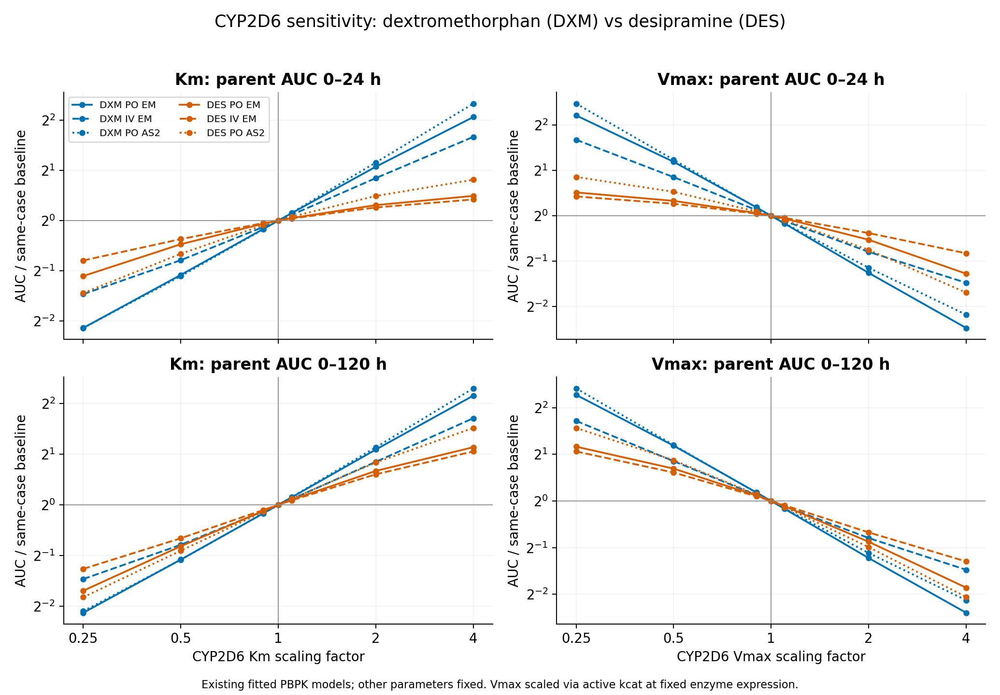
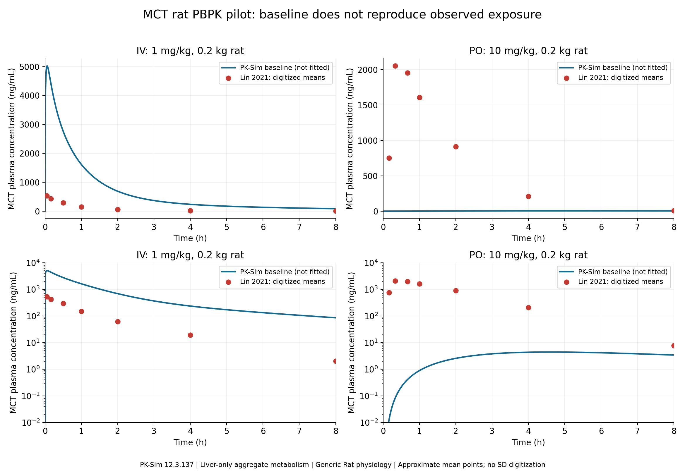

由 research_report.md 生成 · 当前研究计划
TAPS–QM/MM–PBPK：研究依据、案例选择与当前结论
更新：2026-10-23。本文说明研究问题、案例选择、已有证据及其边界；文件入口见项目首页，下一步交付见研究计划。
1. 我们要验证什么
PBPK 把吸收、分布、代谢和排泄连接到体内浓度–时间过程。对单个 CYP 代谢过程，常见输入是 Km 与 kcat，再由活性酶量/浓度得到容量。项目希望检验：能否用分子层的信息，为其中一个明确定义的反应提供可独立验证的参数，而后检验它对暴露预测的贡献。
研究链条为：TAPS 寻找构象路径 → 补充采样恢复状态权重/动力学 → QM/MM 研究化学反应 → 速率网络给出浓度–初速关系 → IVIVE 接入 PBPK → 对比独立体外与体内观测。
这里至少包含三个不同问题：路径/机制是否正确，速率或表观参数是否正确，以及参数放入共享 PBPK 背景后是否有预测价值。任一层的成功不能自动证明下一层。
只有在最简 E+S ⇄ ES → E+P 的稳态机制下，才有：
Km = (koff + kcat) / kon
Kd = koff / kon
Vmax = kcat × Eactive
因此结合自由能/Kd 不能直接当 Km；单个化学步骤 kchem 也不能直接当完整 CYP 周转数。Vmax 必须带活性酶量和归一化基准。CYP 多步循环应从适当网络求初速曲线，检验 MM 是否成立，不能无条件套最简公式。
当前选择 DXM→DXO／human CYP2D6 作为主方法验证，MCT→dehydromonocrotaline／rat CYP3A1 作为 PA 活化探索。二者成熟度不同：前者具备更连贯的公开机制与 PBPK 参照，后者用于检验有实际应用意义、但证据与模型均更不完整的情形。
2. 为什么从公开 OSP 模型中选择 DXM
2.1 OSP 提供什么
Open Systems Pharmacology 的公开药物模型可提供原生 MM 过程、个体与表达、生理设置、给药、临床观测和模型评价资料。它是公开模型参照库，各模型的开发目的、证据完整度、拟合程度和版本不同，不能整体视为统一且全部独立的标准 benchmark。
公开模型通常经过拟合。把一个保存的体外 Km/Vmax 填入模型，并不代表曲线只由这两个实验值决定；有效 kcat、通透性、分配、清除和表达等可能已优化。比较价值在于沿用清楚的背景，审计目标过程是否生效，以及它在特定条件下是否影响所选终点。
2.2 主要比较例与取舍
| 例子 | 可提供的帮助 | 首轮验证的限制 | 当前用途 |
|---|---|---|---|
| Digoxin–P-gp | 原生 MM 转运、多途径清除和观察资料 | 所选恢复公式情景中关闭 P-gp，母体 AUC 仅约增 9.1%（IV）/10.5%（PO）；目标区分度有限，另需完整转运循环 | 保留作接口与响应比较 |
| Alprazolam–CYP3A4 | 代谢参数变化能明显影响暴露 | alpha-OH、4-OH 两条目标氧化支路，并有重要拟合输入；不能把总效应当作一个位点单反应参数 | 保留作复杂度与输入比较 |
| Desipramine–CYP2D6 | 已有与 DXM 同框架的敏感性，部分产物终点响应更强 | DXM 的母体终点响应更强；本地同底物同反应的化学机制链条以 DXM 更连贯 | 定量对照，不作为第二主案例 |
| DXM–CYP2D6 | 原生过程、临床数据、同反应 QM/MM、底物解离实验及敏感性均有依据 | 独立体外参数与临床研究用途仍需冻结；有效 kcat 含拟合 | 主方法验证 |
阿芬太尼、非洛地平等也有公开 PBPK 候选价值，但当前没有与 DXM 同程度的本地反应机制、数据与响应核查链条，暂不扩展活动范围。
比较文件位于 OSP MM 比较资料。original 和 formula_restored 必须分开。部分原模型固定了有效 kcat，改变保存的体外 Vmax 并未改变实际过程；“曲线不变”不能直接解释为生物学不敏感。上述 P-gp 约 10% 效应指恢复公式后的特定情景，不能推广为所有地高辛条件。
2.3 DXM 的三层优势
反应端有直接先例。 Oláh、Mulholland 与 Harvey 的 2011 年 PNAS 论文研究 DXM 氧化选择性，包含 CYP2D6 的 O-去甲基化 QM/MM；这是本项目所需反应的机制起点，而非仅“同属 CYP”的类比。[1]
构象/速率端有可核对实验。 McCarty 等研究 CYP2D6 Trp75 通道门控，包含 DXM stopped-flow 底物解离参照，可用于检查相关微观量。[2]
PBPK 端有公开输入和目标响应。 Rüdesheim 等提供 DXM/DXO 模型和多研究观测；本地敏感性显示 DXM 母体暴露对目标 Km/有效容量有明显响应。[3] 三层证据结合，能减少从零建立反应、模型和实验参照的成本，但尚不能保证最终参数准确。
3. DXM 数据到底支持到哪一步
3.1 观测和模型覆盖
冻结的官方快照含 3 个化合物、29 个模拟、41 组观测。论文描述 28 项临床研究（1 IV、26 单次 PO、1 多次 PO）；研究数、模拟数和观测条目数是不同口径。
| 观测分析物 | 数据集数 | 时间点数 |
|---|---|---|
| DXM | 27 | 269 |
| DXO | 10 | 86 |
| DXO-O-glucuronide | 1 | 8 |
| Total DXO | 3 | 30 |
| 合计 | 41 | 393 |
393 是数据集时间网格点数，不是受试者数。含 SD 等辅助列后，观测长表为 732 行；各行保留原单位，不能把辅助列重复算作新增观测。29 个模拟的输出映射引用 37 个不同观测名称。
这些资料可能已用于原模型开发或评价，不能全部称为本研究的独立盲测数据。下一步要逐研究登记原模型和本研究中的用途。即使本研究未再拟合，继承的背景模型也可能已经利用相同临床数据，结论须限定为该背景下的增量检验。
3.2 实验字段与有效参数的区别
| 字段 | 本地默认过程记录 | 证据解释 |
|---|---|---|
| Km | 4.65 µM | 来源指向 Lutz 2012 (dextrorphan)，需回原始 assay 冻结可比性 |
| 保存体外 Vmax | 0.134 nmol/min/mg | 微粒体归一化；不是当前直接驱动模型的独立单酶周转数 |
| CYP 含量 | 10 pmol/mg | 快照来源 Unknown，需要独立核查 |
| 默认有效 kcat | 90.89 min⁻¹ | 优化参数 |
| AS=2 有效 kcat | 242.45 min⁻¹ | 优化参数，不能作为所下载 CYP2D6 蛋白的实测常数 |
证据表见参数及来源。Lutz 与 Isoherranen 2012 是体外参数回溯入口，但目前尚未形成完整、与计算体系匹配的独立 G1。[4]
本地敏感性通过缩放实际生效的 kcat，在固定酶表达下改变有效 Vmax。不能仅修改保存 Vmax 后，未经运行时审计就宣称容量已经变化。
3.3 已有敏感性的主要发现
历史批次包含 DXM/DES 各 PO_EM、IV_EM、PO_AS2，共 6 场景。每场景 17 次：基线、Km 六档（0.25/0.5/0.9/1.1/2/4×）、有效 Vmax 六档、同向联合 0.5/2×、目标关闭、重复基线。合计 102 主运行；另 6 快照构建、6 局部浓度诊断，计 114 次求解。它们不是 114 次独立临床验证。
| PO_EM 指标 | DXM | DES |
|---|---|---|
| Km×2：母体 AUC0–24 相对基线 | 2.106× | 1.239× |
| Km×2：母体 Cmax 相对基线 | 1.590× | 1.145× |
| Vmax×0.5：母体 AUC0–24 相对基线 | 2.281× | 1.256× |
| Vmax×0.5：母体 Cmax 相对基线 | 1.787× | 1.158× |
| Vmax×0.5：产物 AUC0–24 相对基线 | DXO 0.938× | 2-OH-DES 0.626× |
DXM 对母体终点更有区分度；DES 的某些产物终点更响应，因此不能笼统说 DXM 的所有终点都最好。DXO AUC 变化小，也不代表其峰值不变：同情景 DXO Cmax 约为基线 0.666×。
在 IV 下 Km/Vmax 同时×2、保持比值时，母体 AUC0–120 变化仅约 −0.263%（DXM）、−0.517%（DES）。这说明一定条件下参数可相互补偿，PK 曲线接近不能证明 Km 与 Vmax 分别预测正确。另一方面，口服肠黏膜局部有效浓度可能接近或超过 Km；不能仅凭总血浆浓度低就断言全系统处于线性区。
指标见 metrics.csv 和联合缩放检查。历史重复基线最大绝对差为 0，R/Python 积分最大相对差约 3.06×10⁻¹³，PKML/快照构建峰值归一误差最大约 5.47×10⁻⁸；它们支持数值处理一致性，不说明实验预测准确性。

3.4 不可忽略的场景和结构限制
PO_EM 的剂量为 30 mg DXM HBr，折游离碱 21.99 mg；IV_EM 为 0.5 mg/kg 游离碱、30 min 输注；PO_AS2 为 15 mg HBr，折游离碱 11 mg。敏感性模拟延长到 120 h，超出原观察窗的部分仅作外推。参数倍数是诊断范围，不是生物学置信区间。
选定 PO_EM 有显式 DXO，但 Capon 场景观测映射只有母药；选定 IV_EM 和 PO_AS2 只有母药与目标代谢汇，没有显式 DXO。不能补造产物曲线，也不能把无输出写作零浓度。未经去结合 DXO、酶解后的 total DXO 与蛋白 unbound DXO 必须按原测量方法区分。
结构起点 2F9Q 是 3.00 Å 的人 CYP2D6 工程晶体，含 HEM，有 L230D/L231R 和 N 端截短；不是 DXM 共晶。四条晶体链不构成功能四聚体证据。当前 PubChem DXM/DXO 为独立 3D 输入，还未做结合、质子化、膜环境、Compound I、参数化或平衡。CYP2D6 单一序列也不能直接代表所有 AS=2 个体。
4. 为什么保留 MCT，以及必须如实说明的局限
4.1 案例价值与反应定义
MCT（monocrotaline，野百合碱）是 PA 分子，已有本地体外耗竭、PBK 文献、母体/MNO PK、模型试点与结构材料，适合作为 PA 暴露—生物活化方向的探索起点。
目标产物 dehydromonocrotaline（脱氢野百合碱，monocrotaline pyrrole） 是反应性活化产物；monocrotaline N-oxide（MNO） 属另一支路。DHP、GSH 捕获物和大分子加合物可提供活化证据，但不等于完整脱氢产物本身，也不能把它们的所有生成步骤归为同一次酶内催化。
Suparmi 2020 的 Fig.1 和相关原始文献支持这一机制方向。[5,7,8] 选择大鼠 CYP3A1 是研究范围决定，当前并未获得足以将其锁定为该支路唯一或主要酶的证据。
4.2 两篇主要文章各自测了什么
| 来源 | 原始测量/模型 | 可用输入 | 不能据此推出 |
|---|---|---|---|
| Suparmi 2020 | 雄性 SD 大鼠混合肝/肠微粒体的母体总耗竭；七室 PBK | 肝 Km=9.2 µM、Vmax=0.06 nmol/min/mg；肠 13.4、0.02；MPPGL=35 mg/g；血清 fu=0.53±0.12 | 参数不是 CYP3A1 单酶，也不是脱氢产物形成；血清 fu 近似血浆有条件 |
| Lin 2021 | 雄性 SD 大鼠 MCT/MNO 血浆 LC–MS/MS PK；IV 1 mg/kg、PO 10 mg/kg，n=5/组 | 母体与 MNO 的图和 PK 汇总 | 无脱氢产物 PK，无 CYP3A1 分型，非 Suparmi 同一实验 |
Suparmi 的 logP=−0.65 来自 ChemDraw 预测，不是实测。肝 Vmax×MPPGL 得 2.1 nmol/min/g liver，是组织总容量；不能将数值 2.1 直接称为 CYP3A1 的分子 kcat。原文表中名为 “kcat” 但单位 mL/min/mg 的量属于清除效率，不能与 min⁻¹ 周转数混用。
Suparmi 两份原始 DOCX 已取得；第一份含模型代码，第二份含作者对 Estep 等放射性当量资料的二次提取。作者代码中肝 Km=9.22、肠 13.39，与表中四舍五入值有别；默认大鼠 0.25 kg、IV 60 mg/kg，不是当前 0.20 kg 的 Lin 低剂量试点。代码采用 Ka≈1.16 h⁻¹，将经验吸收值因 OCT1 贡献乘 2；它不是直接测得的 OCT1 Km/Vmax，也不能直接当作 PK-Sim 肠 Pspec。
Lin 接受稿共 18 页，p16 Fig.3、p18 Table 3。表题误写 URM/UNO，实际按 MCT/MNO 列解释。母体 IV AUC0–24=516±34 ng·h/mL；PO=4035±495；PO Cmax=2102±193 ng/mL、Tmax=0.400±0.149 h，F=78.2%。这些是论文统计，不是当前数字化曲线重新估计的精确值。[6]
本地只将母体每途径 7 个 0–8 h 均值点作近似数字化，保留像素与来源；未可靠提取 SD，未取得个体原始表，24 h 近定量限点不赋零。放射性当量含代谢物贡献，不能与特异母体 LC–MS 浓度混合拟合。
4.3 CYP3A1 证据到哪一层
Reid 等 1998 的 SD 大鼠微粒体研究支持 CYP3A 家族参与 MCT 代谢及共价结合；现有本地信息限于摘要，未取得原始全文，不能凭摘要唯一分出 CYP3A1/3A2。[7] Yao 等 2014 是小鼠肝 CYP450/CYP3A 相关研究，不能直接指定一个大鼠亚型。[8]
早前选择 CYP3A1 的直接底物线索之一来自 Clivorine：Lin 等 2003 大鼠研究（DOI 10.1021/tx0340302）及后续 2007 研究（10.1124/dmd.106.014100）涉及 CYP3A1/3A2 活化及性别/水解支路。它们不能转移成 MCT 的单酶参数证据。Clivorine 有 PK 文献线索，当前仍缺与本项目同程度的已整理模型和反应特异参数；保留备选，不继续扩展活动目录。
项目 PPT 中 Retrorsine/Clivorine 的大鼠微粒体表观参数，也不能换标签作为 MCT，或直接归为某一个 CYP。30 min 耗竭法还需核对初速、时间/蛋白线性、结合、酶活变化与实验性别/批次。
4.4 当前母体 PBPK 的偏差
pilot 使用通用 200 g Rat、UNKNOWN 性别，默认 PK-Sim Standard 分配/通透性，pKa=6.5 和非限制性溶解度含假设；仅建立聚合肝 MCT_TotalMetabolism，没有显式 MNO/脱氢生成、肠代谢或 OCT1 摄取。自动 Metabolite 仅为记账汇。
| 指标 | Lin 2021 | 当前基线 | 含义 |
|---|---|---|---|
| IV AUC0–24，ng·h/mL | 516±34 | 5808.07 | 高估 11.26 倍；独立于肠吸收问题 |
| PO AUC0–24，ng·h/mL | 4035±495 | 54.80 | 低估约 73.6 倍 |
| PO Cmax，ng/mL | 2102±193 | 4.43 | 低估约 475 倍 |
| PO Tmax，h | 0.400±0.149 | 4.583 | 吸收时间过程明显失配 |
24 h 进入黏膜比例仅 0.1380%，母体粪便比例约 89.26%。它们直接提示吸收端问题，但进入黏膜比例不是绝对 F。把经验 Papp 直接替代 PK-Sim 通透性可明显增加吸收并使 AUC 过高；此接口探针未经验证，不是推荐生理参数。
IV 进一步诊断如下，Km、fu、分布及其他过程保持原设置：
| 极限诊断 | AUC0–24，ng·h/mL | 对文献比值 |
|---|---|---|
| 基线 | 5808.07 | 11.256 |
| kcat×100 | 2130.80 | 4.129 |
| 肝细胞双向被动通透性×100 | 4567.81 | 8.852 |
| 两者同时×100 | 627.70 | 1.216 |
在当前结构内，有效代谢与肝细胞交换共同限制清除；100× 是诊断范围，不是可信参数。联合探针虽改善 AUC，3 min 浓度仍约 3468 ng/mL，对照文献最早采样和表中 Cmax 约 531 ng/mL，仍需核对早期分布、血/浆比、组织结合及给药/采血对应。不能仅凭 AUC 接近宣称模型已校准成功，更不能把被动交换探针称为 OCT1 模型。
已有 OSPSuite-R 重算 14 PKML 与 14 快照模拟，各曲线 505 点；对历史 AUC 最大相对差约 2.43×10⁻⁸。数值复现通过而生物学失配保留，两者是不同判断。数据见基线与诊断。

4.5 接入活化参数前的必要条件
- 确认 MCT 特定活化反应的大鼠 CYP3A1 贡献与其他亚型背景；现有总耗竭参数不能替代该证据。
- 准备经原文结构、立体化学、电荷/互变与原子映射核验的完整脱氢产物/中间体。当前只有 MCT、MNO SDF，没有合格的脱氢产物输入。
- 获得反应特异的产物生成或可靠捕获初速数据，解释捕获效率和后续反应；母体 PK 不能单独识别活化支路。
- 修正 IV 分布/清除/IVIVE 与 PO 吸收背景。若用 Lin 数据校准，应另留独立研究，或明确仅为条件性预测。
- 拆分聚合母体清除已覆盖的目标份额，防止增加 CYP3A1 支路时重复计数。
rat CYP3A1 当前为 P04800 AlphaFold DB v6，504 aa、无 heme；结构可信度、辅因子、活性态和复合物准备均需后续完成。因此 MCT 暂不能与 DXM 同等作为定量成功判据。
5. 如何公平检验联合方法
5.1 模型与观测的角色
G0 关闭目标 kcat，保留正 Km；G1 使用独立反应特异体外参数；G2 使用分子计算与网络推导参数。三者共用冻结的生理、理化、吸收/分布、表达和非目标过程，并用同一 IVIVE。G3 是匹配实测数据，不是额外一个模型。原 OSP 拟合值另列参照。
G2 对 G0/G1 只能检验整条联合管线。要主张 TAPS 的增益，需 G2-control：相同起始体系、预算、重复、QM/MM 和网络，替换采样方法。若关键步骤仍用实验约束，应称 hybrid，并排除其在该约束量上的独立预测主张。
5.2 从分子结果到 PBPK 的接口
| 层次 | 有效交付 | 不可跨越的解释边界 |
|---|---|---|
| TAPS / MD | 路径、候选状态、经补充采样的群体/转移信息 | 偏置轨迹时间不是动力学时间；路径节点数不是平衡权重 |
| QM/MM 静态路径 | 反应机制、选择性、电子能势垒 ΔE‡ | 不自动是采样自由能或绝对速率 |
| 自由能与速率理论 | 定义温度/参考态/修正的 kchem | Compound I 条件反应不覆盖其形成及完整循环 |
| 动力学网络 | v–S、适用时的表观 Km/kcat 和不确定性 | 需结合、门控、化学、释放及必要电子/质子供给；不强行压成 MM |
| IVIVE | 匹配归一化的器官容量和局部浓度接口 | 活性酶量、相对表达、亚细胞体积、结合定义不能省略 |
例如在适用的单步过渡态理论近似下，kchem ≈ κ(kBT/h)exp(−ΔG‡/RT)；自由能与 R 的单位必须一致，所得 s⁻¹ 接入 min⁻¹ 时乘 60。κ 及修正不得用期望 PK 反拟合后又声称是独立分子预测。
恒定 fu,inc 且 assay 约定适用时，Km,u=fu,inc×Km,app；微粒体与血浆的 fu 不同。Vmax 的 nmol/min/pmol enzyme 转 kcat min⁻¹，数值乘 1000。用酶总量相乘得到总容量，用酶浓度相乘得到体积归一化速率，两者不能混用。
5.3 评价与失败也要可解释
先检验独立体外速率/参数，再做 PK。曲线用实际观测时间的正值、可定量点计算 GMFE；AUC/Cmax 同时报告 P/O 与对称倍数误差，Tmax 报时间差。0.5–2 倍只作辅助描述，不事后替代非劣效界值。
按研究划分开发与评价，不能随机拆同曲线时间点。若 IV 用来校准分布/清除，PO 属于该条件下的预测。保留 Km/kcat 的相关性并传播联合不确定性，分开处理丰度、结合和背景模型。只有均值曲线时，不能声称评价个体预测区间覆盖。
G1/G2 都差优先查共享模型；G1 好而 G2 差优先查速率网络/恢复；曲线好但参数不合理要查补偿与泄漏；目标关闭无变化先查实际参数生效和条件区分度。具体执行门槛见研究计划。
6. 当前进度与接下来的决策
已完成的是资料整理、目标响应筛选、MCT 试点重算与偏差诊断，以及起始结构收集。尚未完成催化复合物、TAPS 采样、QM/MM 计算、分子速率网络或正式 G0/G1/G2 验证。 文献已有 QM/MM 不是本项目已有 QM/MM 参数。
下一阶段集中于 DXM 的独立 assay、目标构建体、酶量/结合校正和临床数据用途冻结。其后依次推进体系准备、采样与 control、化学路径/自由能、网络及独立体外检验，最后接入 PBPK。MCT 并行补反应/酶证据并修共享背景，未达门槛则保留探索结论。项目的当前计划只有这一份。
7. 核心文献与证据层级
以下给出当前决策需要的原始来源；本地取得状态与阅读层级分别说明。未取得全文不等于论文没有数据，也不将摘要冒充全文核查。
| 编号 | 文献与链接 | 当前用途与本地状态 |
|---|---|---|
| [1] | Oláh J, Mulholland AJ, Harvey JN. Understanding the determinants of selectivity in drug metabolism through modeling of dextromethorphan oxidation by cytochrome P450. PNAS 2011;108:6050–6055. DOI · PMC | 同底物同反应 QM/MM；本地全文 HTML。重点是反应/选择性，不是完整 Km/kcat 预测 |
| [2] | McCarty KD et al. Tryptophan-75 Is a Low-Energy Channel-Gating Residue that Facilitates Substrate Egress/Access in Cytochrome P450 2D6. DMD 2021;49:179–187. DOI · PMC | 本地全文 HTML；DXM 底物解离实验，其他底物工作须区分 |
| [3] | Rüdesheim S et al. Physiologically-based pharmacokinetic modeling of dextromethorphan to investigate interindividual variability within CYP2D6 activity score groups. CPT PSP 2022;11:494–511. DOI · PMC · OSP | 全文 XML、补充 PDF、原生项目已本地保留 |
| [4] | Lutz JD, Isoherranen N. Prediction of relative in vivo metabolite exposure from in vitro data using two model drugs: dextromethorphan and omeprazole. DMD 2012;40:159–168. DOI · PMC | 体外参数回溯入口；独立匹配 assay 与活性酶归一化仍待 M1 冻结 |
| [5] | Suparmi S, Wesseling S, Rietjens IMCM. Monocrotaline-induced liver toxicity in rat predicted by a combined in vitro physiologically based kinetic modeling approach. Arch Toxicol 2020. DOI · PMC | PDF、原模型补充、放射性数据补充均已取得 |
| [6] | Lin F, Pan A, Ye Y, Liu J. Simultaneous determination of monocrotaline and its N-oxide metabolite in rat plasma by LC-MS/MS: application to a pharmacokinetic study. Biomed Chromatogr 2021. DOI | 完整接受稿 PDF；未取得个体原始数值，未确认出版社补充存在/内容 |
| [7] | Reid MJ et al. Involvement of cytochrome P450 3A in the metabolism and covalent binding of 14C-monocrotaline in rat liver microsomes. J Biochem Toxicol 1998;12:157–167. PubMed | 目前证据核查限摘要；支持大鼠 CYP3A，不能唯一指定 CYP3A1 |
| [8] | Yao J et al. Hepatic cytochrome P450s play a major role in monocrotaline-induced renal toxicity in mice. Acta Pharmacol Sin 2014;35:292–300. DOI · PMC | 小鼠机制证据；不能替代大鼠重组单酶 assay |
| [9] | Zhu et al. TAPS: A traveling-salesman based automated path searching method for functional conformational changes of biological macromolecules. JCP 2019;150:124105. DOI · 代码 | 本地提取全文；路径搜索与后续动力学恢复分开 |
| [10] | Lonsdale et al. QM/MM Modeling of Regioselectivity of Drug Metabolism in Cytochrome P450 2C9. JACS 2013. DOI · PMC | 多构象/自旋方法参照，历史核查全文摘录；不是 DXM 参数来源 |
附录 A. 两篇 DXM 分子文章能怎样使用
**Oláh 2011：**从 2F9Q 起始建立计算结合姿态，研究 DXM 氧化的反应/选择性和构象、自旋依赖。它提供 O-甲基相关夺氢与后续反应的机制依据，不是 DXM 共晶，也没有现成完整 kon/koff/kcat/Km 可直接填入 PBPK。复现时须分别说明静态能垒、采样自由能和计算范围。
**McCarty 2021：**DXM 底物解离参照约 koff=28±4 s⁻¹，W75A 约 14.4±0.6 s⁻¹。该量是底物解离，不能替代产物释放；Ks 也不能直接当 Km。文中详细通道 MD 与部分稳态动力学主要针对 bufuralol，不能换成 DXM 的结果。
这些证据适合先验证一个定义清楚的微观量、机制或构象影响，再研究完整网络。若使用其速率作外部约束，就明示为混合方法，不重复宣称该约束量被独立预测。
附录 B. 数据可得性与使用边界
| 关键项 | 当前状态 | 对研究的影响 |
|---|---|---|
| DXM 临床原始个体记录与完全独立测试研究 | 当前以 OSP 收集曲线/原论文为基础，独立性清单未冻结 | 不能把 41 组观测全部称外部盲测 |
| DXM 匹配的独立反应 assay/活性酶量 | 原文入口已知，可比性仍待落实 | 暂不能把优化 kcat 当 G1 |
| MCT CYP3A1 特异活化 Km/kcat | 所收集资料未提供 | 总耗竭不能代替活化生成 |
| 游离脱氢产物血浆 PK | 当前未取得 | 母体/MNO/放射性当量不能替代 |
| Lin 原始个体/数值曲线表 | 未取得；目前 14 个近似均值点 | 数字化误差和均值/个体差异需保留 |
| Suparmi 微粒体原始重复测量 | 两份补充未提供完整原始重复表 | 表格/曲线是拟合或汇总层参照 |
| Estep 1991 原始全文和原始表 | 未取得；有 Suparmi 二次提取 | 放射性当量按二手来源引用 |
| 脱氢完整产物 SDF 与催化体系 | 尚未核验/准备 | 不用 MNO、DHP 或裸 AlphaFold 结构代替 |
| TAPS/QM/MM 分子推导参数 | 尚未计算 | 当前结果不属于正式 G2 |
附录 C. 运行与项目维护
PBPK 统一使用 conda ospsuite-r，优先运行已审计 PKML/快照，不恢复旧 Windows CLI 主流程。MCT 基线运行不再读取外部咖啡因模板；模板继承影响已写进快照的计算方法、求解框架等，应在模型结构层解释。具体命令与版本见环境说明。
活动文件按案例和用途组织，原始模型/数据保持来源边界；主报告只有 MD 与同源 HTML 两种视图，下一步任务只有一份研究计划。旧报告、搜索史、未选候选和完整历史批次归入 legacy/；它们用于追溯，不参与当前阅读主线。